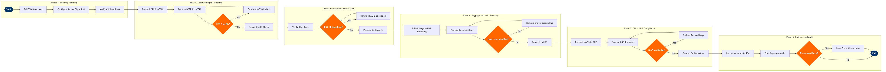

Airport Security Compliance (TSA/CBP)
Ground Operations & Airport Services › Airport & Gate Management · 16 L4 steps · 6 phases · 4 decision gates · Updated 2026-10-01 23:55
📊
Process Flow Diagram (BPMN)

📋
L4 Process Steps
| Step | Step Name | Role / Swim Lane | System | Input | Output | KPI | Dec? | Exc? |
|---|---|---|---|---|---|---|---|---|
Phase 1 1.1 |
Pull TSA Security Directive updates from portal | Airport Security Coordinator | TSA Secure Flight Portal | Daily TSA operational bulletin and Security Directive notifications | Updated security parameters and procedural changes for departure day | Directive review completion 100% by 04:00 local; zero missed directives | N | N |
| 1.2 | Configure Secure Flight data elements in PSS | Airport Security Coordinator | Amadeus Altéa PSS | Updated TSA directive, PNR database for day-of-departure flights | Secure Flight data fields (name, DOB, gender, redress number) enabled and validated for all active PNRs | Secure Flight data completeness ≥99.5% of PNRs before check-in window opens | N | Y |
| 1.3 | Verify Airport Security Program compliance readiness | Station Security Manager | SITA Airport Management System (AMS) | TSA-approved Airport Security Program (ASP) document, staffing roster, certification records | Compliance readiness checklist signed off; uncertified staff removed from security-sensitive positions | ASP readiness sign-off ≥60 min before first departure; 100% rostered security staff TSA-certified | N | N |
Phase 2 2.1 |
Transmit Secure Flight Passenger Data Records to TSA | Departure Control Agent | Amadeus Altéa PSS (Secure Flight module) | PNR passenger name, date of birth, gender, redress number (if held) | Secure Flight data batch transmitted to TSA; transmission acknowledgement logged | Transmission ≥72 hours before departure for advance bookings; 100% transmitted before check-in opens for same-day bookings | N | Y |
| 2.2 | Receive Boarding Pass Print Result from TSA | Departure Control Agent | Amadeus Altéa PSS (Secure Flight module) | TSA BPPR response codes: OK, SSSS (enhanced screening), or Inhibited (no-fly) | Boarding authorization flag applied to each PNR in Altéa; inhibited passengers flagged for escalation | BPPR response received within 2 min per passenger; 100% BPPR statuses resolved before check-in closes | Y | Y |
| 2.3 | Escalate SSSS or No-Fly result to TSA liaison | Airport Security Coordinator | TSA Secure Flight Portal | SSSS or Inhibited BPPR flag from Altéa, passenger PNR details | TSA case reference number issued; SSSS passenger directed to enhanced screening lane; no-fly passenger offloaded and PNR annotated | SSSS coordination completed ≥45 min before departure; no-fly offload confirmed ≥30 min before departure; 100% SSSS passengers cleared or offloaded before gate close | N | Y |
Phase 3 3.1 |
Verify passenger identity document at gate | Gate Agent | SITA Airport Management System (AMS) | Government-issued photo ID, boarding pass scan, REAL ID enforcement flag | Identity verified and documented; boarding pass scanned; PNR boarding status updated in AMS | Gate document check throughput <45 sec per passenger; REAL ID non-compliance interception rate 100%; boarding completion ≥10 min before departure | Y | Y |
| 3.2 | Handle REAL ID non-compliance exception at gate | Gate Agent / Airport Security Coordinator | Amadeus Altéa PSS | Non-compliant ID flagged at gate scan; TSA alternate acceptable ID list | Passenger offered TSA-approved alternate documents; denied boarding if no acceptable ID presented; denial documented in Altéa PNR remarks | REAL ID exception resolution <5 min; denied boarding documented in Altéa within 15 min of incident; zero passengers boarded without TSA-acceptable ID | N | Y |
Phase 4 4.1 |
Submit hold baggage manifest to TSA EDS screening | Ramp Operations Supervisor | SITA BagManager | Checked baggage tags, weight manifest, passenger count for flight | Baggage screening manifest submitted; TSA EDS queue populated with all bag tags | 100% of hold bags submitted to EDS before ramp loading begins; EDS screening throughput ≥300 bags/hr at Level 1 | N | Y |
| 4.2 | Execute passenger-baggage reconciliation check | Ramp Operations Supervisor | SITA BagManager | Checked-in passenger list from Altéa DCS vs. boarded passenger scan list from gate | Reconciliation report: matched, unmatched, and flagged bags; departure hold issued if mismatch found | Reconciliation completed ≥15 min before scheduled departure; mismatched bag rate <0.1% of loaded bags | Y | Y |
| 4.3 | Remove and re-screen unaccompanied baggage | Ramp Operations Supervisor / TSA Officer | SITA BagManager + TSA EDS Console | Unmatched bag tag identified in reconciliation report; TSA officer tasking request | Bag located, off-loaded, quarantined, and re-screened; departure hold issued; BagManager updated with off-load record | Unaccompanied bag off-load completed <10 min of identification; zero unaccompanied bags loaded; off-load documented 100% in BagManager | N | Y |
Phase 5 5.1 |
Transmit eAPIS passenger manifest to CBP | International Operations Agent | CBP eAPIS (Advance Passenger Information System) | PNR passport and visa data, crew manifest, flight departure details | eAPIS manifest transmitted to CBP; acknowledgement receipt logged with timestamp | Manifest transmitted ≥60 min before international departure per 19 CFR 122.49a; 100% transmission rate; CBP acknowledgement within 10 min | N | Y |
| 5.2 | Receive and action CBP pre-departure APIS response | International Operations Agent | Amadeus Altéa PSS + CBP eAPIS Portal | CBP per-passenger clearance or no-board response codes | No-board orders applied to PNR and flagged in Altéa; cleared passengers proceed to boarding | CBP no-board response processed ≤10 min of receipt; 100% no-board orders actioned before gate close | Y | Y |
| 5.3 | Offload CBP no-board passenger and associated bags | Gate Agent / Ramp Operations Supervisor | Amadeus Altéa PSS + SITA BagManager | CBP no-board order with passenger PNR and all associated baggage tag numbers | Passenger denied boarding; all associated bags located, off-loaded, and quarantined; CBP case number logged in Altéa PNR | No-board offload completed <15 min of order receipt; 100% associated baggage removed before departure; CBP case number documented in PNR | N | Y |
Phase 6 6.1 |
Report security incident to TSA Operations Center | Station Security Manager | TSA eFile Portal | Incident type classification, timestamp, affected passenger PNR, witness statements, gate CCTV reference | TSA incident report filed; case reference number issued; station log updated | Initial report filed within 4 hours of occurrence per 49 CFR Part 1544.305; 100% incident capture with zero unreported events | N | Y |
| 6.2 | Conduct post-departure security compliance audit | Station Security Manager | SITA Airport Management System (AMS) + Amadeus Altéa PSS | Boarding records, Secure Flight BPPR logs, BagManager reconciliation reports, ID check gate logs | Daily security compliance audit report; exception list with root-cause annotations for corrective action; submitted to airline security compliance team | Audit report completed within 2 hours of last departure; security exception rate <1% of daily passengers processed; 100% exceptions assigned corrective owner | N | N |
📋